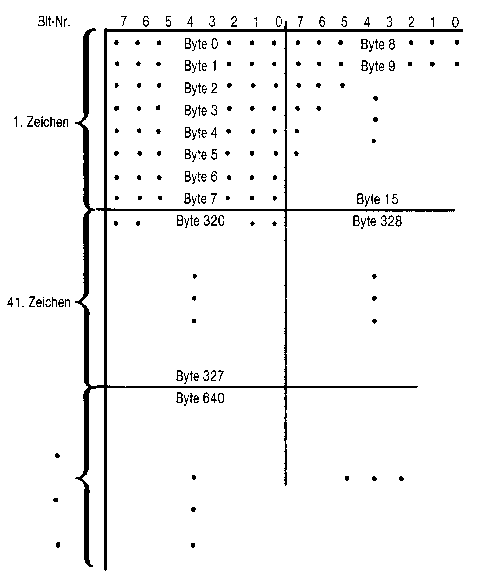
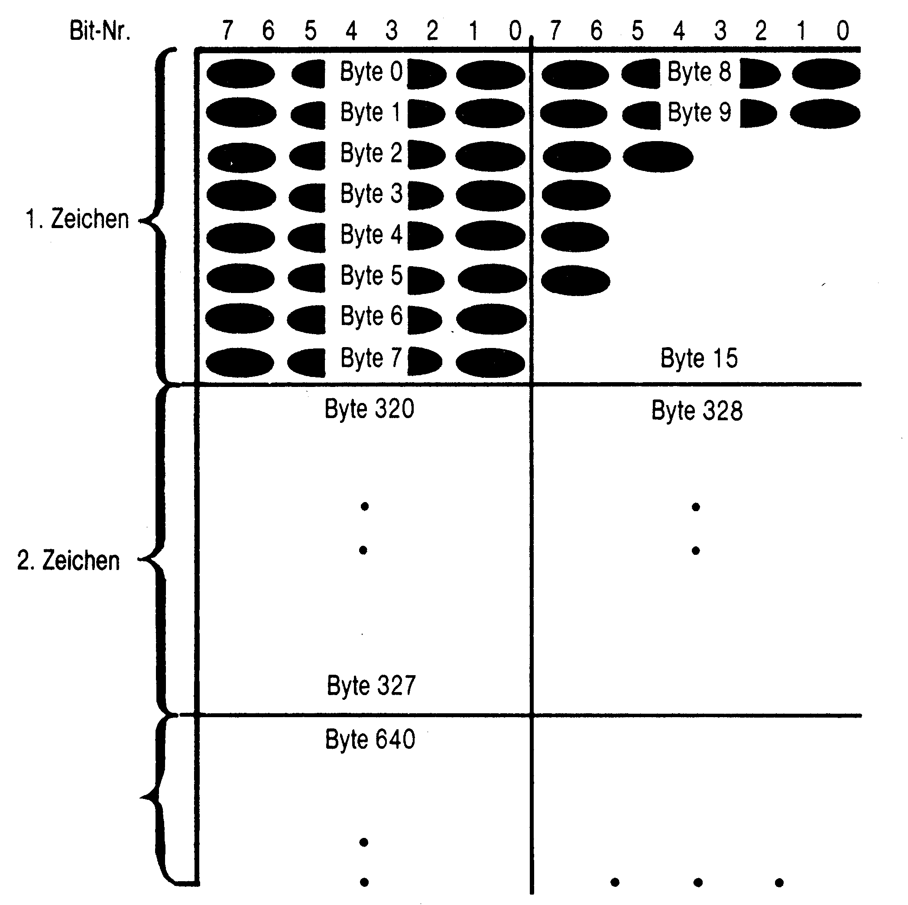
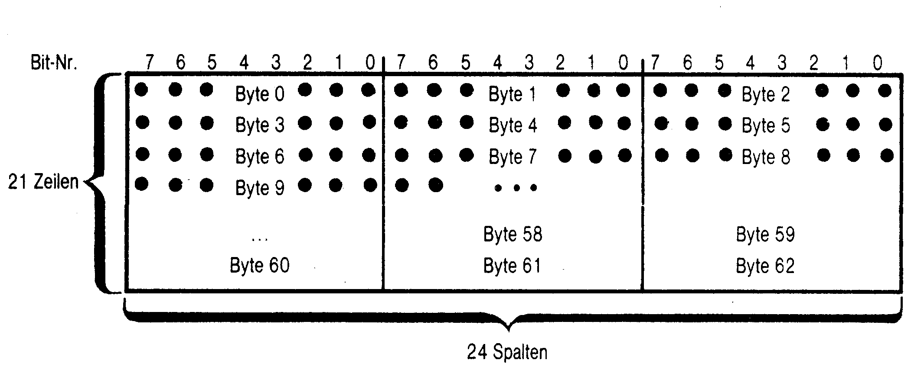
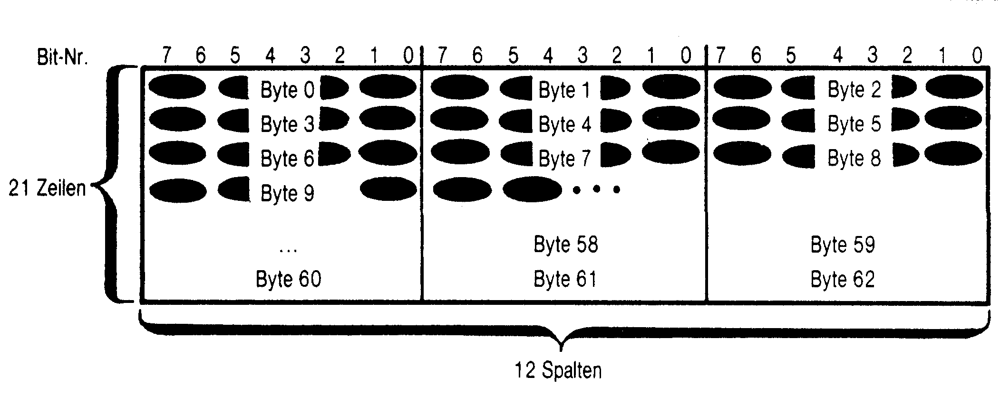

Spielen mit Musik und Grafik
Lernen Sie das Programmieren von Grafik und Sound auf Ihrem C 64. Daß das auch in Basic möglich ist, beweist der folgende Artikel.
Wie oft schon hat der Basic-Programmierer die hervorragenden Sound- und Grafikmöglichkeiten seines C 64 bestaunt, wenn er ein gekauftes Spiel, Grafik- oder Musikprogramm auf seinem Heimcomputer laufen ließ. Und wie oft hat er sich dabei gewünscht, ebensolche Klänge und Grafiken in seinen eigenen Basic-Programmen verwenden zu können.
Um sich diesen Wunsch zu erfüllen, gibt es zwei Möglichkeiten. Zum einen gibt es da die meist recht teueren Basic-Erweiterungen, die mit Zusatzbefehlen ohne großen Aufwand Sound- und Grafikprogrammierung in Basic möglich machen.
Nachteilig dabei ist jedoch, daß ein mit diesen speziellen Befehlen geschriebenes Programm nur mit der verwendeten Basic-Erweiterung lauffähig ist, da für den Standard-Basic-Interpreter zum Beispiel Befehle wie »PLOT« oder »MUSIC« Fremdwörter sind. Sie sind also zum normalen C 64-Basic vollkommen inkompatibel.
Die andere Möglichkeit ist die Programmierung mit dem Basic, das Ihrem C 64 zur Verfügung steht. Sie ist zwar ungleich komplizierter und, wenn es auf Geschwindigkeit ankommt, sehr viel langsamer. Die so geschriebenen Programme sind aber ohne Erweiterungen auf jedem C 64 zu betreiben.
Um die Programmierung von Sound und Grafik in Basic soll es auch in diesem Bericht gehen.
Zu diesem Zweck werden die dafür verantwortlichen C 64-Bausteine, der VIC 6569 (Grafik) und der SID 6581 (Sound), unter die Lupe genommen und deren Steuerung von Basic aus aufgezeigt. Schließlich betrachten wir noch die beiden Ein-/Ausgabechips CIA 1 und CIA 2, denn auch mit diesen Bausteinen läßt sich in Basic einiges anstellen.
Im allgemeinen geschieht die Steuerung der drei gerade erwähnten Chips durch Register, die in bestimmten Speicherbereichen des C 64 adressiert sind. Die direkte Speichermanipulation ist bekanntlich mit den beiden Basic-Befehlen »PEEK« und »POKE« möglich. So lassen sich auch die VIC-, SID- und CIA-Register ansprechen und verändern.
In den Action-Grafikspielen, Zeichen- und Soundprogrammen passiert im Prinzip dasselbe, nur in der sehr viel schnelleren Maschinensprache.
Der VIC ist derjenige Chip, der für das Bild auf Ihrem Monitor oder Fernseher sorgt, während Sie mit dem C 64 arbeiten. Er ist dafür verantwortlich, daß die Buchstaben und Zeichen ordnungsgemäß, leserlich und in der richtigen Farbe auf dem Bildschirm erscheinen. Auch die Verarbeitung der HiRes-Grafik mit 320*200 Punkten Auflösung und die Steuerung der vielgerühmten Sprites stehen in seinem Aufgabenbereich.
Zu diesem Zweck besitzt der VIC 47 Register, die im Speicher des C 64 ab $D000 (dezimal 53248) liegen. Welches Register für welche Funktionen zuständig ist, ist in Bild 1 zu sehen.
| Register | Beschreibung | Adresse |
|---|---|---|
| 0 | X-Koordinate von Sprite 0 | 53248 |
| 1 | Y-Kooridnate von Sprite 0 | 53249 |
| 2–15 | X- und Y-Koordinaten der weiteren Sprites 1 bis 7 | 53250–53263 |
| 16 | Überlaufregister für alle X-Koordinaten der Sprites. Bit 0 für Sprite 0, Bit 1 für Sprite 1 und so weiter |
53264 |
| 17 | Steuerregister 1 Bit 4 0= Bildschirm aus Bit 5 1= HiRes-Modus (hochauflösende Grafik) Bit 6 1= Extended Color |
53265 |
| 18–20 | zuständig für Rasterzeilen-Interrupt in Maschinensprache | 53266–53268 |
| 21 | Sprites an/aus. Jedem Sprite ist ein Bit zugeordnet 1= Sprite an 0= Sprite aus |
53269 |
| 22 | Steuerregister 2 Bit 4 1= Multicolor-Modus |
53270 |
| 23 | Sprite-Vergrößerung in Y-Richtung. Jedem Sprite ist ein Bit zugeordnet 1= Sprite wird in Y-Richtung vergrößert 0= Sprite wird normal dargestellt |
53271 |
| 24 | Basisadressen von Zeichengenerator und Video-RAM Bit 1–3 für Zeichengenerator Bit 4–7 für Video-RAM |
53272 |
| 25–26 | Interrupt Request- und Interrupt Mask-Registere | 53273–53274 |
| 27 | Hintergrund/Sprite Priorität Jedem Sprite ist ein Bit zugeordnet 1= Priorität der Hintergrundzeichen 0= Priorität des Sprites |
53275 |
| 28 | Sprite Multicolor/Normal. Jedem Sprite ein Bit zugeordnet. 1= Sprite ist Multicolor-Sprite 0= Sprite ist normal |
53276 |
| 29 | Sprite-Vergrößerung in X-Richtung Jedem Sprite ist ein Bit zugeordnet 1= Sprite wird in X-Richtung vergrößert |
53277 |
| 30 | Sprite-Sprite-Kollision. Jedem Sprite ist ein Bit zugeordnet Bei einer Kollision zweier Sprites sind die entsprechenden Bits gesetzt |
53278 |
| 31 | Sprite-Hintergrund-Kollision. Jedem Sprite ist ein Bit zugeordnet Bei der Kollision eines Sprites mit dem Hintergrund ist das entsprechende Bit gesetzt |
53279 |
| 32 | Rahmenfarbe | 53280 |
| 33–36 | Hintergrundfarbe 0–3 | 53281–53284 |
| 37–38 | Sprite Multicolor-Register 1 und 2 | 53285–53286 |
| 39-46 | Spritefarbe für Sprite 0 – Sprite 7 | 53287–53294 |
Durch Setzen oder Löschen der jeweiligen Bits in den Registern kann die gewünschte Funktion ein- oder ausgeschaltet werden. So läßt sich der VIC auf verschiedene Darstellungsarten umschalten.
Der wohl bekannteste Zustand ist der Modus der normalen Zeichendarstellung, den der VIC nach dem Einschalten des Computers annimmt. In dieser Betriebsart holt sich der VIC der Reihe nach Bytes aus dem Video-RAM (auch Bildschirmspeicher genannt), und bringt dann das dazugehörige Bitmuster aus dem Charakter-ROM als entsprechendes Zeichen auf den Bildschirm.
Sämtliche 512 Zeichen, die der C 64 kennt, sind im Charakter-ROM als Bitmuster gespeichert und werden auf die eben beschriebene Weise auf dem Bildschirm sichtbar gemacht. Dabei ist es prinzipiell möglich, den Zeichensatz nach eigenem Belieben zu verändern. Um dies von Basic aus zu tun, ist einiger Programmieraufwand nötig, der im Rahmen dieses Kurses nicht erklärt werden soll.
Die Farbinformation für jedes Zeichen auf dem Monitor entnimmt der VIC aus einem extra eingerichteten Farb-RAM, in dem jeweils 4 Bit pro Bildschirmposition zur Festlegung der Zeichenfarbe vorgesehen sind.
Etwas komplizierter ist die Darstellung von sogenannten Multicolor-Zeichen. Hierbei kann jedes Zeichen bis zu vier Farben haben. Man erreicht dies, indem man das Bit 4 des VIC-Registers 22 setzt.
Der VIC kontrolliert in diesem Modus zuerst die entsprechenden 4 Farbbit eines Zeichens und untersucht das erste Bit. Ist es 0, wird das Zeichen »normal« in der Größe von 8*8 Punkten dargestellt. Sollte das Bit gleich 1 sein, so wird das Zeichen nur noch in einer 4*8-Punktematrix mit doppelt breiten Punkten behandelt. 2 Bit im Bitmuster des Zeichens entsprechen also jetzt einem Bildschirmpunkt. Diese beiden Bits geben nun dem Grafik-Chip an, wo er den Farbwert des doppelt breiten Punktes entnehmen soll:
| 00 | Hintergrund-Farbregister 0 (Register 33) |
| 01 | Hintergrund-Farbregister 1 (Register 34) |
| 10 | Hintergrund-Farbregister 2 (Register 35) |
| 11 | restliche 3 Bit aus dem Farb-RAM |
Hochauflösende Grafik
Setzt man im VIC-Register 17 das Bit mit der Nummer 5, so arbeitet der Video-Chip von nun an im Bitmap-Modus, das heißt jedes gesetzte Bit im Speicher entspricht einem Punkt auf dem Bildschirm. Der VIC verarbeitet eine Auflösung von 320*200 Punkten, wofür er einen Grafikspeicher von 8 KByte benötigt. Der normale Bildschirmspeicher wird dabei zum Farb-RAM »umfunktioniert« und liefert jetzt die Informationen für die Farbe der gesetzten und nichtgesetzten Bildschirmpunkte.
Jedes Byte enthält hierbei den Farbwert für eine 8*8-Matrix von Punkten. Die ersten 4 Bit bestimmen die Farbe der gesetzten Punkte, die letzten 4 Bit sind für die nicht gesetzten Punkte der Matrix zuständig. Eine recht kompliziert klingende Sache also, die, wie wir noch sehen werden, auch nicht gerade einfach zu programmieren ist.
Wem die zwei Farben einer 8*8-Matrix nicht genug sind, der mag den Multicolor-Modus benutzen, der durch Bit 5 im Register 17 und durch Bit 4 des Registers 22 aktiviert wird. Er ermöglicht eine hochauflösende Grafik in vier verschiedenen Farben gleichzeitig. Die Auflösung beträgt hier aber nur noch die Hälfte des normalen HiRes-Modus, nämlich 160*200 Punkte. Jeder Bildschirmpunkt ist nun doppelt so breit und wird durch je 2 Bit im Grafikspeicher repräsentiert. Wie im Multicolor-Zeichenmodus gibt dieses Bitpaar die Farbe an, die der Grafikpunkt bekommen soll. Die Zustände der beiden Bits lassen den VIC wissen, woher er den Farbwert holen soll:
| 00 | aus Hintergrund-Farbregister 0 (Register 33) |
| 01 | höherwertiges Halbbyte aus Video-RAM |
| 10 | niederwertiges Halbbyte aus Video-RAM |
| 11 | aus Farb-RAM |
Auf diese Weise lassen sich Grafikbilder mit bis zu vier Farben nebeneinander erzeugen.
Was wäre ein anständiger VIC 6569 ohne seine Sprites, von denen er acht gleichzeitig steuern kann. Durch die Manipulation von bestimmten VIC-Registern ist es möglich, diese Sprites ziemlich schnell über den Bildschirm zu bewegen.
Sprites gibt's auch
Weitere Register zeigen Zusammenstöße mit Hintergrundzeichen oder anderen Sprites an, weshalb die Sprites hervorragend für Spiele geeignet sind, in denen Figuren schnell bewegt werden müssen.
Wie bei der hochauflösenden Grafik gibt es auch zwei verschiedene Spritearten: die zweifarbigen HiRes-Sprites und die Multicolor-Sprites, die aus vier Farben bestehen dürfen. So ist auch die Auflösung der Multicolor-Sprites nur halb so groß wie die der Zwei-Farben-Sprites, nämlich nur 12*21 Punkte statt 24*21.
Doch wie, so wird mancher Basic-Programmierer fragen, kann man diese so kompliziert klingenden Dinge selbst programmieren?
Um diese Frage zu beantworten, beginnt man am besten mit dem Einfachsten, nämlich mit der Manipulierung von Zeichen und deren Farben.
Was Sie sicherlich schon oft in Ihren Programmen getan haben, ist die Änderung der Rahmen- und Hintergrundfarben. Mit »POKE 53280,1« und »POKE 53281,1« wird der Bildschirm beispielsweise vollkommen weiß, während die Zeichenfarbe gleich bleibt. Diese Befehle bewirken nichts anderes, als daß die VIC-Register 32 (Rahmenfarbe) und 33 (Hintergrundfarbe 0) jeweils mit dem Farbwert Eins belegt werden (Eins entspricht der Farbe Weiß). Genauso wird auch bei den anderen Registern verfahren. Die Adressen der einzelnen Register sind in Bild 1 dezimal und hexadezimal aufgeführt.
Die Zeichenfarbe selbst kann man, wie aus dem C 64-Handbuch ersichtlich, über die Tasten »1« bis »8« in Verbindung mit der CTRL- und der Commodore-Taste verändern. Die zweite Möglichkeit ist, die Farbwerte im Farb-RAM zu verändern. Im Normalfall befindet sich das Farb-RAM im Textmodus im Bereich von 55296 bis 56295 ($D800-$DBE7). »POKE 55299,1« bewirkt zum Beispiel, daß das vierte Zeichen in der obersten Zeile weiß wird. Ebenso kann man es mit allen Zeichen machen, wie das Beispielprogramm in Listing 1 zeigt.
Nun aber zur interessanteren Seite des Video-Prozessors, der hochauflösenden Grafik. Sie ist leider auch am kompliziertesten zu programmieren. Schon einfache Dinge, wie das Setzen oder Löschen eines Grafikpunktes, können beträchtliche Schwierigkeiten bereiten. Schuld daran ist die ungewöhnliche Aufteilung des 8 KByte großen Grafikspeichers. Sie macht es erst durch einigen Programmieraufwand möglich, den Bildschirm in ein Koordinatensystem aufzuteilen und die einzelnen Punkte über die X- und Y-Koordinaten anzusprechen.
Im Normalfall, das heißt nach dem Einschalten des Computers, liegt der Grafikspeicher des VIC im Bereich von $2000 bis $3FFF (8192-16383) und das dazugehörige Farb-RAM an der Stelle des »normalen« Bildschirmspeichers, also von $0400 bis $07FF (1024-2047). Wie man sieht, liegt die Grafikseite direkt im Basic-Speicher und kann bei größeren Basic-Programmen zu Konflikten mit der Grafik führen. Es ist jedoch möglich, den Aktionsbereich unseres VIC im Gesamtspeicher zu verschieben und somit das Problem zu beseitigen. Wie man das macht, wird am Ende dieses Abschnitts beschrieben, da dies mit der eigentlichen Programmierung der Grafik nichts zu tun hat.
Bevor man eine Grafik erzeugen will, muß natürlich der VIC darüber informiert werden, daß er eine Grafik erzeugen und in welchem Modus dies geschehen soll.
Untersucht man die Tabelle in Bild 1, so entdeckt man in Register 17 und 22 die entprechenden Bits zum Ein- und Ausschalten des HiRes- und des Multicolor-Modus.
Doch wie, wird sich mancher Basic-Programmierer fragen, kann man von Basic aus einzelne Bits löschen oder setzen? Um diese Frage zu beantworten, muß man etwas in die Welt der Binär-Arithmetik mit ihren logischen Verknüpfungen eintauchen:
Das Basic des C 64 beherrscht unter anderem auch zwei logische Operatoren, nämlich »AND« und »OR«. Sie bewirken eine logische Und- beziehungsweise Oder-Verknüpfung zwischen zwei Werten. Bild 2 zeigt eine Wahrheitstabelle, die angibt, wie sich die Verknüpfung auswirkt.
AND- und OR-Wahrheitstabellen
AND
| AND | 0 | 1 |
|---|---|---|
| 0 | 0 | 0 |
| 1 | 0 | 1 |
OR
| OR | 0 | 1 |
|---|---|---|
| 0 | 0 | 1 |
| 1 | 1 | 1 |
Beispiele:
11001100
AND 00001001
00001000
10011001
OR 10100100
10111101Etwas zur »Wahrheit«
Dieses Verknüpfen der einzelnen Bits kann auch zum gezielten Setzen oder Löschen von bestimmten Bits verwendet werden. Dazu verknüpft man einfach das entsprechende Byte mit einem bestimmten Wert, so daß das gewünschte Bit 1 oder 0 wird. Hier einige Beispiele:
Wir haben ein Byte mit dem Wert 155. Binär umgeformt sähe der Wert so aus:
10011011 = 155 (dezimal)
Angenommen in diesem Byte wollen wir das vierte Bit von rechts (also Bit 3) löschen, das heißt gleich Null setzen. Nun braucht man einen Wert, der mit »AND« oder »OR« verknüpft das Bit Nummer 3 löscht, die restlichen Bits aber unverändert läßt.
Betrachtet man die Wahrheitstabellen für »AND« und »OR« (Bild 2), so stellt man fest, daß sich die Und-Verknüpfung dafür eignen würde.
10011011 = 155
AND 11110111 = 247
10010011 = 147Und schon ist das besagte Bit gelöscht. Allgemein erreicht man den dezimalen Wert zur Und-Verknüpfung durch folgende Formel:
255-(dezimaler Wert des zu löschenden Bits)
In unserem Beispiel ist der Stellenwert unseres Bits Nummer 3 gleich Drei. Der Dezimalwert errechnet sich also aus 23, das ergibt 8. Setzen wir ihn in die Formel ein, so erhalten wir den gewünschten Wert 247 zur Und-Verknüpfung:
155 AND (255-8) = 147
Nach demselben Muster läßt sich selbstverständlich auch ein Bit setzen. Hier allerdings bietet sich der »OR«-Operator, also die Oder-Verknüpfung an. Bleiben wir beim Beispiel von vorhin, nur daß nun Bit Nummer 6 (das zweite Bit von links) auf Eins gesetzt werden soll:
10011011 = 155
OR 01000000 = 64
11011011 = 219Das entsprechende Byte muß nur mit dem dezimalen Wert des zu setzenden Bits ge-oder-t werden, um dieses Bit gleich Eins werden zu lassen. Der Stellenwert des Bits Nummer 6 beträgt 26, und somit nach Adam Riese 64:
155 OR 64 = 219
Nach diesem Prinzip kann man sämtliche Bits in einem Byte setzen oder löschen. Genauso werden auch die einzelnen Bits in den Registern des VIC 6569 manipuliert.
Zum Einschalten der hochauflösenden Grafik sind einige POKE-Befehle nötig. Im folgenden einige Basic-Zeilen, die die hochauflösende Grafik einschalten:
60000 REM ***GRAFIK EINSCHALTEN ***
60100 REM
60200 VIC=53248:REM STARTADRESSE VIC
60300 POKE VIC+17, PEEK(VIC+17) OR 2↑5
60400 POKE VIC+17, PEEK(VIC+17) OR 2↑6
60450 POKE VIC+24, PEEK(VIC+24) OR 8Nun muß man noch entscheiden, ob man im vierfarbigen Multicolor-Modus mit einer niedrigeren Auflösung arbeiten will oder die Zweifarben-Grafik mit 320*200 ansprechbaren Punkten benutzen möchte.
Für die hochauflösende Grafik muß man im Normalzustand des Computers eigentlich nichts mehr verändern, sollte jedoch sicherheitshalber das Multicolor-Bit in Register 22 löschen. Das geschieht mit:
60500 POKE VIC+22,PEEK(VIC+22) AND 255-16Soll der Multicolor-Modus eingeschaltet werden, ist ein entsprechender POKE-Befehl zu verwenden, der das Bit setzt:
60500 POKE VIC+22,PEEK(VIC+22) OR 16Doch damit ist das Einschalten der Grafik genaugenommen noch nicht zu Ende. Startet man obiges Programm, so schaltet der VIC zwar auf Grafik um, doch man wird nur ein buntes Durcheinander von verschiedenfarbigen Punkten auf dem Bildschirm erkennen.
Grafik einschalten
Das liegt daran, daß der jetzt vom VIC als Grafikspeicher deklarierte Bereich (normalerweise $2000-$3FFF) zuvor anderweitig benutzt wurde. Daher ist er mit »wilden« Werten »gespickt«, die der Video-Chip in seinem Bitmap-Modus als wirres Muster auf den Bildschirm bringt.
Aus diesem Grund muß der Grafikspeicher vor Benutzung stets »leergeräumt«, das heißt sämtliche 64000 Bit gelöscht werden. Das ist mit einer einfachen FOR-NEXT-Schleife zu bewerkstelligen. Im folgenden Basic-Programm ist dies realisiert.
61000 REM ***GRAFIKSPEICHER LÖSCHEN ***
61100 REM
61200 VD= 8192:REM STARTADRESSE GRAFIKSPEICHER
61300 FOR X=VD to VD+8000
61400 POKE X,0
61500 NEXT XFügt man diese Basic-Zeilen zu unserem Programm hinzu, kann man feststellen, daß das »Punktewirrwarr« langsam aber sicher verschwindet. Die Farben bleiben jedoch, wo sie sind. Wir erinnern uns, daß im Grafik-Modus die Farbe jedes 8*8-Kästchens in einem gesonderten Farb-RAM festgelegt ist. In unserem Fall liegt es, wie schon erwähnt, im Bereich des normalen Textbildschirms.
Jedem 8*8-Kästchen im Grafikspeicher ist ein Byte im Farb-RAM zugeordnet. Die vier höchstwertigen Bits eines jeden Bytes geben dabei die Farbe der gesetzten, die vier niederwertigen Bits die der nichtgesetzten Punkte an.
Um ein »anständiges« Grafikbild zu erzeugen, muß die Farbe jedes Kästchens einheitlich gesetzt werden, was wiederum in einer FOR-NEXT-Schleife geschehen kann:
62000 REM ***FARBE SETZEN ***
62100 REM
62200 FR=1024:REM ANFANGSADRESSE FARBRAM
62300 FARBE= 0*16 + 14:REM PUNKTE SCHWARZ-HINTERGRUND HELLBLAU
62400 FOR X=FR TO FR+1000
62500 POKE X,FARBE:REM FARBWERT SETZEN
62600 NEXT XJetzt haben wir einen leeren Grafik-Bildschirm mit blauem Hintergrund. Die Grafikpunkte werden später in der Farbe Schwarz auf dem Monitor erscheinen.
Drücken Sie nun RUN/STOP und RESTORE zugleich, gelangen Sie wieder in den normalen Text-Modus zurück. Ein laufendes Basic-Programm wird dabei aber unterbrochen. Soll dies nicht geschehen, muß man die Grafik vom Programm aus wieder abschalten. Dazu müssen lediglich die Bits wieder gelöscht werden, mit denen man den Grafik-Modus zuvor eingeschaltet hatte.
Das sind also die Bits 5 und 6 im VIC-Register 17:
63000 REM ***GRAFIK AUSSCHALTEN ***
63100 REM
63200 VIC=53248:REM GRUNDADRESSE VIC
63300 POKE VIC+17, PEEK(VIC+17) AND 255-32:REM BIT 5
63400 POKE VIC+17, PEEK(VIC+17) AND 255-64:REM BIT 6Damit hat man alle Programmteile zusammen, um die HiRes-Grafik zu bedienen.
Jetzt zum schwierigeren Teil, dem Setzen und Löschen von einzelnen Punkten. Hierbei müssen einige Berechnungen angestellt werden, bevor der Punkt auf dem Bildschirm erscheint.
Es ist leider nicht möglich, Punkte direkt über X- und Y-Koordinaten in den Grafikspeicher einzugeben. Das liegt am recht unhandlichen Aufbau des Grafikspeichers.
So wird das Grafikbild nicht Zeile für Zeile hintereinander im Speicher abgelegt, sondern wie im Zeichengenerator die einzelnen Zeichen in Blöcken von jeweils 8*8 Punkten.
8 Bytes des Grafikspeichers sind jeweils für eine solche 8*8-Matrix (auch Grafik-Matrix oder Grafik-Kästchen genannt) zuständig. Je eine 8-Punkte-Reihe in dieser Matrix wird durch ein Byte dargestellt.
Die nächsten 8 Byte liefern dann die Information für die zweite Matrix, die folgenden acht für den dritten Block und so weiter bis zum rechten Rand des Bildschirms. Dann beginnt die zweite Matrix-Zeile nach dem gleichen Schema und wird so Kästchenzeile für Kästchenzeile bis zum unteren Bildschirmrand fortgeführt. Bild 3 veranschaulicht dieses Prinzip.

Insgesamt passen 320/8, also gleich 40 der 8*8-Blöcke in eine Reihe und 200/8, also gleich 25 8*8-Blöcke in eine Spalte der Grafik. Man sieht, daß dies dem Text-Modus ähnelt, da ja ein normales Zeichen auch aus einer 8*8-Matrix besteht.
Wegen diesem, für den Programmierer etwas komplizierten Bildaufbau einer HiRes-Grafik, ist es nur mit einigen Berechnungen möglich, die einzelnen Punkte wie in einem Koordinatensystem nach X- und Y-Koordinaten festzulegen. Die X-Achse legen wir dabei waagrecht von links nach rechts und numerieren die Punkte in dieser Richtung nach ihrer Anzahl von 0-319. Die Y-Achse wird senkrecht von oben nach unten von 0-199 angelegt. Jeder Punkt wird dadurch mit seinem X- und Y-Wert in seiner Position auf dem Bildschirm eindeutig bestimmt. Um von den Koordinaten (X,Y) eines Punktes auf das richtige Byte und Bit im Grafikspeicher zu schließen, bedarf es einiger Überlegungen. Betrachten wir zunächst die Y-Koordinate.
Im ersten Schritt wird der Y-Wert durch acht dividiert. Dadurch ermittelt man die Kästchenzeile des zu berechnenden Grafikpunktes:
Kästchenzeile = INT(Y/8)
Wie schon ausgerechnet, passen 40 Grafik-Kästchen in jeweils eine der Kästchenzeilen. Jede Grafik-Matrix benötigt 8 Byte. Eine Kästchenzeile belegt demnach 40 * 8 = 320 Byte des Grafikspeichers.
Multiplizieren wir nun das Ergebnis der oben beschriebenen Division mit 320, erhalten wir jetzt die relative Startadresse der errechneten Kästchenzeile im Grafikspeicher.
Adresse der Kästchenzeile = 320 * INT(Y/8)
Schließlich darf man die restlichen Bytes der obigen Division nicht vergessen und zählt sie zur besagten Adresse dazu.
Der Divisionsrest berechnet sich sehr einfach:
DivRest = Y-(Kästchenzeile*8)
Kennt man die Gesetze der Binärarithmetik, erkennt man sofort eine einfachere Berechnung des Restes einer Division durch den Wert 8:
DivRest = Y AND 7
Addieren wir den Rest zu unserer Adresse hinzu, erhalten wir letztendlich folgende Formel:
Y-Adresse = 320 * INT(Y/8) + (Y AND 7)
Jetzt benötigt man noch den X-Wert des Grafikpunktes. Wie oben dividiert man ihn durch 8, um analog dazu die Nummer der Kästchenspalte, in der sich der Punkt befindet, zu erhalten.
Kästchenspalte = INT(X/8)
Daraus läßt sich durch eine Multiplikation mit acht die Anzahl der Bytes berechnen, die zur vorhin ermittelten Y-Adresse dazugezählt werden müssen:
Bytes = 8 * INT(X/8)
Damit hätte man die Adresse des Grafik-Bytes, in dem der betreffende Punkt gespeichert ist, gefunden.
Grafikadresse = 320 * INT(Y/8) + (Y AND 7) + (8 * INT(X/8))
Was geschieht mit dem Rest der Division des X-Wertes; muß auch er eine Bedeutung haben? Er gibt an, welches Bit in der Adresse gesetzt werden muß, um unseren Grafikpunkt auf dem Bildschirm erscheinen zu lassen.
Man berechnet die Nummer des Bits folgendermaßen:
Bitnummer = 7-(X AND 7)
Nun kann der Grafikpunkt an der richtigen Stelle gesetzt oder gelöscht werden. Wie man einzelne Bits von Basic aus setzt oder löscht, ist Ihnen ja bereits bekannt.
Listing 2 und 3 zeigen zwei kleine Basic-Programme zum Setzen und Löschen von Grafikpunkten, die unsere erstellten Formeln verwenden.
Durch weitere Berechnungen lassen sich daraus auch weitere Grafikfunktionen programmieren. Probieren Sie doch einmal ein Basic-Programm zu schreiben, das eine Linie zwischen zwei vorgegebenen Punkten (X1;Y1) und (X2;Y2) zieht.
Im Multicolor-Modus (Bit 4 = 1 im VIC-Register 22) läuft die Punkteberechnung ähnlich ab. Der entscheidende Unterschied ist die nur halbe Auflösung von 160, dafür aber doppelt breiten Punkten in X-Richtung. In Y-Richtung hat sich nichts geändert. Die Formel zur Berechnung der Y-Adresse des Grafikpunktes ist demnach im HiRes-und im Multicolor-Modus identisch (siehe auch Bild 4).

Man erkennt, daß nun 2 Bit für einen Grafikpunkt zuständig sind. Ein Byte hat also nur noch für vier Punkte Platz. Das bedeutet eine Änderung bei den Formeln »Bytes« und »Bitnummer«. Auch das Setzen oder Löschen von Punkten ist nun etwas komplizierter.
Bytes = 8 * INT(x/4)
Bitnummer1 = (3-(X-(4*INT(X/4))))*2
Bitnummer2 = Bitnummer1 + 1
Da jetzt auch 2 Bit pro Punkt verändert werden müssen, gibt es auch zwei Bitnummern. Listing 4 zeigt das Setzen eines Punktes in Multicolor.
Als Anwendungsbeispiele sollen die Listings 5 und 6 dienen, die beide eine Sinuskurve auf den Bildschirm bringen. Das Programm in Listing 5 tut dies im HiRes-Modus; das Programm in Listing 6 verwendet die Multicolor-Grafik.
Sprites richtig programmiert
Die Fähigkeit des VIC, Sprites zu erzeugen, ist wohl jedem bekannt. Sprites sind genau gesagt kleine Grafiken von 24*21 Punkten Größe, die frei über den Bildschirm bewegt werden können. Der VIC kann 8 Sprites gleichzeitig auf dem Bildschirm verwalten.
Er tut dies über einige seiner Register, die sämtliche Informationen über alle Sprites enthalten.
Anders als bei der hochauflösenden Grafik wird ein Sprite Punkt für Punkt, das heißt Bit für Bit der Reihe nach im Speicher abgelegt (siehe Bild 5).

So ist die Erstellung von Sprites etwas einfacher als die Erzeugung von Grafik.
Jedes Sprite besteht aus 24*21, also 504 Punkten und braucht somit 504/8 = 63 Byte Speicherplatz.
Die Farbinformationen für »normale« Sprites entnimmt der VIC aus eigens dafür angelegten Sprite-Farbregistern (VIC-Register 39-46; Adressen 53287 bis 53294). Eine Farbänderung von beispielsweise Sprite Nummer 3 auf rot ist mit POKE 53290,2 zu bewerkstelligen.
Damit liegt der Nachteil »normaler« Sprites schon auf der Hand. Sie können nur aus jeweils einer Farbe bestehen, die in das entsprechende Farbregister gePOKEt wird.
Wenn es normale Sprites gibt, so muß es wohl auch noch andersartige Sprites geben. Die gibt es auch: es sind die Multicolor-Sprites.
Wie bei der Multicolor-Grafik kann ein solches Sprite aus bis zu vier verschiedenen Farben bestehen (wenn man die Hintergrundfarbe mitrechnet). Doch wie sollte es anders sein, ein solch buntes Sprite besitzt nur noch die halbe Auflösung von 12*21 Punkten. Auch hier sind die Punkte wieder doppelt so breit wie normal und werden jeweils durch 2 Bit im Speicher repräsentiert. Dabei bestimmt wieder der Zustand der beiden Bits, woher der Farbwert für diesen Punkt stammen soll:
| 00 | Hintergrund-Farbregister |
| 01 | Multicolor-Register 0 (Register 37) |
| 10 | Multicolor-Register 1 (Register 38) |
| 11 | Sprite-Farbregister (Register 39-46) |
Man sieht, daß alle Multicolor-Sprites zwei gemeinsame Farbregister haben. Das sind die Multicolor-Register 0 und 1. Nur das Register für die vierte Farbe ist für jedes Sprite extra angelegt, und kann somit für alle Sprites unterschiedlich gewählt werden. Der Aufbau entspricht dem eines normalen Sprites mit dem einen Unterschied, daß nun 2 Bit einen Punkt darstellen (Bild 6).

Ob ein Sprite »normal« oder in Multicolor dargestellt werden soll, ist in einem besonderen VIC-Register festgehalten (Register 28; Adresse 53276). Jedem Sprite ist ein Bit dieses Registers zugeordnet. Ein gesetztes Bit bedeutet für den Video-Chip, daß es sich bei dem entsprechenden Sprite um ein Multicolor-Sprite handelt. POKE 53276,128 macht zum Beispiel das Sprite Nummer 7 zum Multicolor-Sprite.
Nachdem man sich überlegt hat, welche Sprites »normal« oder im Multicolor-Modus verwaltet werden sollen, stellt sich noch die Frage, wie man seinen Spriteentwurf am einfachsten in den Speicher bringt.
Hat man keinen Sprite-Editor zur Hand, muß man diese Arbeit wohl oder übel selbst tun. Dazu legt man sich auf Papier ein Raster von 24*21 Punkten an und zeichnet sich seinen Entwurf Punkt für Punkt hinein. Auf einem zweiten Entwurf zeichnet man sich sein Sprite im Bitmuster auf. Jeder gesetzte Punkt entspricht einer Eins im Muster, alle ungesetzten Punkte haben den Wert Null (Bild 7).
Für ein Multicolor-Sprite legt man entsprechend ein 12*21-Raster an und verfährt nach demselben Muster. Der Unterschied ist nur, daß man im zweiten Entwurf nun pro Punkt 2 Bit entsprechend der Farbe einträgt, die der Punkt später haben soll.
Anschließend rechnet man der Reihe nach 8 Bit (also immer ein Byte) in einen dezimalen Wert um und notiert sie neben dem Raster (Bild 7).
Hat man seine 63 Byte zusammengestellt, müssen sie durch POKE-Befehle an den richtigen Platz im Speicher gebracht werden. Dazu muß man sie in den 16-KByte-Adressierungsbereich des VIC legen, damit sie auch gelesen und verarbeitet werden können. Zu diesem Zweck wird der VIC-Bereich in Blöcke zu je 64 Byte eingeteilt. Jeder Block erhält eine Nummer von 0 bis 255. Unsere Spritedefinition muß nun in einem dieser Blöcke untergebracht werden.
In der Einschaltkonfiguration gibt es allerdings einige Einschränkungen. Hier überschneidet der Adreßbereich des VIC einige wichtige Teile des Speichers, wie zum Beispiel die Zeropage.
Block Nummer 0 hätte die Startadresse $0000, Block 1 die Adresse $0040 (dezimal 64) und so weiter.
Setzen wir unser Sprite in diesen Bereich, hätte das verheerende Folgen für die Funktionsbereitschaft unseres C 64. Die ersten Blöcke, die keinen so sehr wichtigen Speicher belegen, sind die Blöcke
| 11 | Bereich $02C0-02FE (704-766) |
| 13 | Bereich $0340-037E (832-894) |
| 14 | Bereich $0380-03BE (896-958) |
| 15 | Bereich $03C0-03FE (960-1022) |
Arbeiten Sie mit der Datasette, kann es dabei auch zu Problemen kommen, da sich die Blöcke 13, 14 und 15 im Kassettenpuffer befinden.
Danach ist es erst wieder ab Block 128, das heißt ab Adresse $2000 (8192) möglich, gefahrlos Sprite-Definitionen abzulegen. Vorsicht sei aber geboten bei großen Basic-Programmen oder wenn Sie gleichzeitig mit HiRes-Grafik arbeiten, da ja bekanntlich ab $2000 (8192) das Grafikbild abgelegt ist. Verschieben Sie den Adreßbereich des VIC, können Sie diesen Problemen teilweise aus dem Weg gehen. Wollen wir aber nur eine Spritedefinition abspeichern, genügen uns die Blöcke 11 und 13 bis 15.
Nehmen wir für unser Sprite den Block 11 und schreiben eine kleine Routine, die uns alle 63 Byte der Definition in diesen Block POKEt. Am besten legt man die Spritewerte in DATA-Zeilen ab und benutzt eine FOR-NEXT-Schleife (Listing 7 verwendet ein kleines Demo-Sprite).
So stehen sie im Speicher
Damit ist die Arbeit der Definition noch nicht zu Ende. Jetzt muß dem VIC mitgeteilt werden, daß unser Sprite ab Block 11 gespeichert ist. Dazu benutzt der VIC je einen Zeiger für jedes der 8 Sprites. Er zeigt auf den Block, aus dem er die Definition für das augenblickliche Aussehen eines jeden Sprites nehmen soll.
Die Zeiger liegen am Ende des Video-RAMs. Das Video-RAM ist genau 1 KByte, also 1024 Byte groß. Zur Darstellung des Bildschirms werden aber nur 40*25 = 1000 Byte benötigt. Der Rest, das sind 24 Byte, liegt brach. Davon werden die letzten 8 Byte als Sprite-Zeiger benutzt. Das sind in unserem Fall die Adressen $07F8-07FF (dezimal 2040-2047). Die Adresse 2040 enthält den Zeiger für Sprite Nummer null, die Speicherstelle 2041 ist für Sprite 2 zuständig und so weiter bis zum Zeiger für Sprite 7 bei Adresse 2047.
Verlegen wir das Video-RAM in einen anderen Bereich (diese Möglichkeit besteht), liegen die Sprite-Zeiger selbstverständlich in anderen Speicherstellen. In diesen Zeigern stehen nun die Blocknummern, bei denen die Definitionen für jedes der 8 Sprites stehen.
Wollen wir dem Sprite 0 zum Beispiel das Aussehen unseres oben genannten Demo-Sprites geben, stellen wir den Zeiger für Sprite 0 auf Block 11 (in dem unsere Sprite-Definition gespeichert ist). Mit POKE 2040,11 ist das schnell geschehen. Soll ein zweites Sprite genauso aussehen, genügt ein entsprechender POKE-Befehl: POKE 2042,11.
Wir legen den gewünschten Zeiger auf denselben Block, und somit sieht Sprite Nummer 2 so aus wie Sprite Nummer 0. Man kann also jede beliebige Sprite-Definition für jedes beliebige Sprite nutzen. Eine Multicolor-Definition für ein normales Sprite zu verwenden, ist natürlich nicht ratsam. Sie können es ja zum Spaß einmal ausprobieren.
Es ist möglich, jederzeit die Definition eines Sprites zu wechseln, indem man den Zeiger auf einen anderen Block stellt. So kann man das Aussehen eines Sprites blitzschnell ändern und somit den Effekt einer Animation erzielen.
POKE 2040,13 ändert das Aussehen des Sprites 0 sofort auf die Definition in Block 13.
Bevor man jedoch ein Sprite auf dem Bildschirm sehen kann, muß es erst eingeschaltet werden. Dazu besitzt der VIC das Register 21 mit der Adresse 53269, das den Einschaltzustand aller Sprites enthält. Für jedes Sprite ist wieder ein Bit des Registers zuständig. Schalten wir also unser Sprite 0 ein:
POKE 53269,1 (Bit 0 wird gesetzt)
Jetzt ist möglicherweise immer noch nichts auf dem Bildschirm zu entdecken, das unserem Sprite gleicht. Womöglich steht es in einer Position außerhalb des sichtbaren Bildschirmbereichs.
Der Bereich, in dem sich ein Sprite befinden kann, ist wie ein Koordinatengitter in X- und Y-Richtung aufgeteilt. Das Gitter ist aber größer als der sichtbare Bildschirm. Es ist möglich, das Sprite einzelpunktweise von 0-511 in X-Richtung und von 0-255 in Y-Richtung zu bewegen.
Der Nullpunkt unseres Sprite-Koordinatengitters liegt weit außerhalb des Bildschirms in der linken oberen Ecke. Positionieren wir das Sprite auf die Koordinaten 20,30, ist es vollständig in der linken oberen Ecke sichtbar. Die Übergröße des Sprite-Bewegungsraumes führt zu dem recht schönen Effekt, daß man das Sprite zu allen Seiten des Bildschirms punktweise hinauswandern lassen kann. Doch wo werden die X,Y-Positionen für jedes Sprite gespeichert?
Bewegung von Sprites
Betrachtet man Bild 1, die Registertabelle des VIC, entdeckt man sie sofort. Die ersten 17 Register sind für die Position der 8 Sprites reserviert. Durch einfache POKE-Befehle kann man die X- und Y-Werte aller Sprites schnell verändern und somit jedes Sprite blitzartig an sämtliche Positionen des Sprite-Koordinatengitters versetzen:
POKE 53248,150
POKE 53249,111
Mit diesen Befehlen wird zum Beispiel Sprite 0 auf Position x=150 und y=111 plaziert.
Die X-und Y-Register aller Sprites können nur Werte von 0-255 annehmen. Will man ein Sprite auf eine X-Position verschieben, die größer als 255 ist (bis maximal 511), muß ein Übertrag auf ein anderes Register geschehen. Dabei muß im Register 16 (53264), dem Übertragsregister, das Bit für das betreffende Sprite gesetzt werden.
In Listing 8 wurde das eben Beschriebene in ein Programm umgesetzt, das die Bewegung eines Sprites verdeutlichen soll.
Doch damit sind die Fähigkeiten unseres Videoprozessors noch nicht ausgeschöpft. So kann jedes Sprite seine Größe in X- und Y-Richtung verdoppeln.
Für diesen Effekt sind die Register 23 (Adresse 53271) für die Y-Vergrößerung und 29 (Adresse 53277) für die X-Vergrößerung verantwortlich. Wieder ist in diesen Registern für jedes Sprite ein Bit zuständig, dessen Zustand dem VIC mitteilt, ob das Sprite normal oder vergrößert dargestellt werden soll. POKE 53271,64 beispielsweise vergrößert das Sprite Nummer 6 in Y-Richtung auf doppelte Höhe.
Betrachtet man die Registertabelle in Bild 1, entdeckt man noch einige andere Sprite-Register, mit deren Hilfe man weitere Eigenschaften der Sprites einstellen kann.
Register 27 (Adresse 53275) erlaubt für jedes Sprite die Wahl, ob es auf dem Bildschirm vor den Hintergrundzeichen oder dahinter bewegt werden soll. Ist das entsprechende Bit gesetzt, so erscheint das angesprochene Sprite hinter den Hintergrundzeichen. Ein gelöschtes Bit gibt dem Sprite Priorität vor dem Hintergrund.
Hintergrundzeichen sind in diesem Fall alle gesetzten Punkt die sich außer den Sprites noch auf dem Bildschirm befinden. Das können wahlweise Zeichen oder auch Grafikpunkte sein.
Stoßen 2 Sprites zusammen, so wird das von Register 30 (Adresse 53278) angezeigt. Der VIC setzt dabei die entsprechenden Bits der Sprites, die kollidiert sind. Sind beispielsweise Bit 5 und 6 gleich 1, zeigt dies eine Berührung von Sprite Nummer 5 mit Sprite Nummer 6 an.
Dabei ist aber Vorsicht geboten, da nach dem Zusammenstoß die Bits nicht mehr selbständig vom Videoprozessor zurückgesetzt werden. Nach jeder Kollisionsabfrage sollte daher das Register regelmäßig vom Basic-Programm gelöscht werden. Mit POKE 53278,0 ist das schnell getan.
Das nächste Register mit der Nummer 31 hat die Adresse 53279 und registriert eine Berührung eines Sprites mit einem Hintergrundzeichen. Wie in Register 30 besagt ein gesetztes Bit, daß das entsprechende Sprite gerade einen Punkt des Hintergrundes berührt hat. Auch hier muß das Register danach wieder von Hand gelöscht werden. So sollte der Befehl POKE 53279,0 nach der Kollisionsabfrage nicht fehlen.
Die Abfrage, ob bestimmte Bits gesetzt sind, ist mit einer IF-THEN-Abfrage leicht zu bewerkstelligen.
Wollen wir überprüfen, ob die Sprites 2 und 7 zusammengestoßen sind, so benutzen wir die folgende Basic-Zeile:
IF (PEEK(53278) AND (2↑2) < > 0) AND (PEEK(53278)
AND (2↑7) < > 0) THEN ... :REM KOLLISIONDamit hätten wir sämtliche Funktionen des VIC beisammen, um alle 8 Sprites auf dem Bildschirm »tanzen« zu lassen.
Bleibt nur noch die Möglichkeit, den Adreßbereich des VIC-Chips zu verschieben.
In manchen Fällen, wie bei besonders langen Basic-Programmen, ist es manchmal notwendig, den HiRes-Grafikspeicher in einen anderen Bereich zu verlegen, als er nach dem Einschalten steht. Durch bestimmte Register im VIC und im CIA 2 (den wir auch noch besprechen werden) kann der 16-KByte-Adreßbereich des VIC im Speicher verschoben werden. Zuständig dafür sind die Bits 0 und 1 im Register 0 der CIA 2, die je nach Zustand den Arbeitsbereich des VIC in bestimmte Speicherbereiche Ihres C 64 legen:
| Bits 1/0 | Arbeitsbereich des VIC |
|---|---|
| 11 | $0000-$3FFF (0-16383) |
| 01 | $4000-$7FFF (16384-32767) |
| 10 | $8000-$BFFF (32768-49151) |
| 00 | $C000-$FFFF (49152-65535) |
Verlegen Sie zum Beispiel den Arbeitsbereich des VIC auf $4000-7FFF (16384-32767), werden auch sämtliche Bildspeicherfunktionen mitverschoben. So liegt nun das Video-RAM im Bereich von $4400-47FF. Auch der Zeichengenerator liegt an anderer Stelle und der Beginn der Sprite-Definitionsblöcke beginnt dann bei $4000 (16384), das heißt Block 0 fängt bei Adresse 16384 und nicht mehr bei Adresse 0 an.
POKE 56576, PEEK(56576) AND (255-2)würde das eben Erklärte realisieren. Ohne weitere Veränderungen wäre aber so kein anständiges Arbeiten mit dem Computer mehr möglich.
Innerhalb des 16-KByte-Adressierungsbereiches läßt sich auch der Bildschirmspeicher in 1-KByte-Schritten verschieben. Um das durchzuführen, sind die Bits 4 bis 7 im VIC-Register 24 zuständig.
Diese 4 Bit repräsentieren die dezimalen Werte von 0 bis 15 und geben an, in welchem 1-KByte-Block sich das Video-RAM befindet. Im Einschaltzustand haben die 4 Bit den Binärwert %0001, was dezimal dem Wert 1 entspricht (Bildschirm in Block 1 bei $0400; dezimal 1024). Wollen wir den Bildschirm nach $0800 (2048), also nach Block 2 verschieben, ist es notwendig, die 4 Bit mit dem Wert 2 zu belegen. Die Bits müssen dann wie folgt gesetzt werden: %0010, was dem Wert 2 entspricht.
Wie das Video-RAM kann auch der Zeichengenerator, das heißt der Speicher, an dem die Bitmuster der Zeichen abgelegt sind, innerhalb des VIC-Arbeitsbereiches verschoben werden. Dies ist lediglich in 2-KByte-Schritten möglich und wird mit den Bits 1 bis 3 des VIC-Registers 24 ermöglicht.
»Verschiebereien«
Auch hier repräsentieren diese 3 Bit einen Wert, der beschreibt, in welchem 2-KByte-Block der Zeichengenerator liegt. Im Normalfall sind die Bits folgendermaßen gesetzt: %010, was dezimal dem Wert 2 entspricht. Der Zeichengenerator liegt also im zweiten 2-KByte-Block des VIC-Arbeitsbereiches. Theoretisch wäre dies der Bereich von $1000-1FFF (dezimal 4096-8191). Eine hardwaremäßige Verschaltung hat aber den Effekt, daß beim Zugriff des VIC auf diesen Adreßbereich automatisch auf das Charakter-ROM im Bereich $D000-DFFF zugegriffen wird. Dort steht der normale Zeichensatz des C 64 und bringt somit die Zeichen auf den Bildschirm.
Verschiebt man den Zeichengenerator beispielsweise auf den Bereich $2000-2FFF (dezimal 8192-12287; Bits 1 bis 3 auf %100), werden die Bitmuster für die Zeichen tatsächlich aus diesem Bereich geholt. Haben Sie dann dort keinen eigenen Zeichensatz gespeichert, wird sich ein heilloses Durcheinander auf dem Bildschirm einstellen. Diese Tatsache ermöglicht aber auch die Herstellung eigener Zeichensätze und kann somit von Vorteil sein.
Schließlich kann auch noch der Grafikspeicher innerhalb des 16-KByte-Arbeitsbereiches auf zwei Positionen verschoben werden. Position 0 wäre der untere 8-KByte-Bereich und Position 1 der beim Einschalten eingestellte obere 8-KByte-Bereich des VIC-Arbeitsspeichers. Liegt der VIC-Adreßbereich von $0000-3FFF (0-16383), so kann also wahlweise der Grafik-Bildschirm auf $0000-$1FFF oder auf $2000-3FFF gelegt werden. Ein Verlegen auf $0000 wäre allerdings nicht sehr ratsam, da sich sonst der Grafikspeicher mit der wichtigen Zeropage überschneiden würde.
Das Verschieben der eben genannten Bereiche erfordert aber einiges an Programmiererfahrung und sollte nur mit äußerster Vorsicht geschehen.
Damit wäre der Abschnitt über den VIC 6569 abgeschlossen. Sollte Ihnen aufgrund der Informationsfülle der Kopf noch nicht rauchen, wird er es spätestens am Ende des nächsten Abschnittes tun. Denn da nehmen wir den SID 6581 mit seinen Eigenschaften zur Klangerzeugung unter die Lupe.
Der SID 6581 ist ein sehr außergewöhnlicher Baustein. Anders als bei den üblichen Tongeneratoren in Computern, kann er als vollständiger dreistimmiger Mini-Synthesizer bezeichnet werden, da er alle Elemente für die einfache Tonerzeugung bis zur Herstellung komplexer Klänge besitzt.
So können mit ihm drei unabhängige Stimmen frei programmiert werden. Dafür bietet er vier Schwingungsarten (Dreieck, Sägezahn, Rechteck und rosa Rauschen) an, die auch gemischt werden können. Jede Stimme besitzt außerdem einen Hüllkurvengenerator (ADSR-Control), der den zeitlichen Ablauf der Lautstärke eines Tones bestimmt. Alle drei Stimmen lassen sich über drei ebenfalls mischbare Filter leiten, womit sich die Klangfarbe manipulieren läßt. Auch die Möglichkeit der Ringmodulation wurde nicht vergessen.
Der SID ist also ein sehr komplexer Baustein, der sich auch nicht gerade einfach programmieren läßt. Will man komplizierte Klänge erzeugen, bedarf es schon einiger Erfahrung und Kenntnisse im Bereich der Tonsynthese. Wie eine solche Klangerzeugung prinzipiell vor sich geht, soll hier erklärt werden.
Richten wir zunächst wieder einen Blick auf die Register des SID, von denen es deren 28 gibt. Bild 7 zeigt eine Aufstellung aller Register mit den Adressen, über die sie angesprochen werden können.
| Register | Bedeutung | Adresse |
|---|---|---|
| 0 | Tonfrequenz für Stimme 1 höherwertiges Byte | 54272 |
| 1 | Tonfrequenz für Stimme 1 niederwertiges Byte | 54273 |
| 2–3 | Pulsbreite für Rechteckschwingung höher- und niederwertiges Byte |
54274–54275 |
| 4 | Steuerregister für Stimme 1 Bit 0 KEY: 1= Ton beginnt nach der entsprechenden Hüllkurve zu erklingen Bit 1 SYNC: 1= synchronisiert Oszillator 1 und 3 Bit 2 RING: 1= Dreiecksausgang wird durch eine Modulation von Oszillator 1 und 3 ersetzt Bit 4 TRI: 1= Dreiecksschwingung Bit 5 SAW: 1= Sägezahnschwingung Bit 6 PUL: 1= Rechteckschwingung (Pulsbreite in den Registern 2 und 3) Bit 7 NSE: 1= Rauschen |
54276 |
| 5 | Hüllkurvenregister 1 Bits 0-3 : Decay-Wert (0-15) Bits 4-7 : Attack-Wert (0-15) |
54277 |
| 6 | Hüllkurvenregister 2 Bits 0-3 : Release-Wert (0-15) Bits 4-7 : Sustain-Wert (0-15) |
54278 |
| 7–13 | Entsprechende Register für Stimme 2 Ausnahmen SYNC synchronisiert Oszillator 2 und 1 RING Dreiecksausgang wird durch Modulation von Oszillator 2 und 1 ersetzt |
54279–54285 |
| 14–20 | Entsprechende Register für Stimme 3 Ausnahmen SYNC synchronisiert Oszillator 3 und 2 RING Dreiecksausgang wird durch Modulation von Oszillator 3 und 2 ersetzt |
54286–54292 |
| 21–22 | Filterfrequenzregister nieder- und höherwertiges Byte Die Frequenz errechnet sich mit diesem Wert (FW) durch F=(30+FW*5.8) |
54293–54294 |
| 23 | Filterresonanz und Stimmenschalter Bit 0 : 1= Stimme 1 wird über den Filter geleitet Bit 1 : 1= Stimme 2 wird über den Filter geleitet Bit 2 : 1= Stimme 3 wird über den Filter geleitet Bit 4-7 : Filterresonanz (0-15) |
54295 |
| 24 | Lautstärke und Filter an/aus Bit 0-3 : Gesamte Lautstärke Bit 4 : 1= Tiefpaß eingeschaltet Bit 5 : 1= Bandpaß eingeschaltet Bit 6 : 1= Hochpaß eingeschaltet Bit 7 : 1= Stimme 3 wird stumm geschaltet |
54296 |
| Die nächsten Register können nur gelesen werden: | ||
| 25–26 | A/D-Wandler 1 und 2 | 54297–54298 |
| 27 | Rauschgenerator-Wert von Stimme 3 augenblicklicher Stand des Rauschgenerators; erzeugt gute Zufallszahlen |
54299 |
| 28 | Hüllkurvengenerator-Wert von Stimme 3 augenblicklicher Stand der Lautstärke von Stimme 3 durch die Hüllkurve; geeignet zur Modulation anderer Parameter |
54300 |
Alle Funktionen, wie die Tonhöhe, Hüllkurve und Schwingungsformen, sind für jede der drei Stimmen extra vorhanden.
| Register 0-6 | Stimme 1 |
| Register 7-13 | Stimme 2 |
| Register 14-20 | Stimme 3 |
Die entsprechenden Register sind für jede Stimme identisch, kleine Änderungen sind in der Tabelle in Bild 5 besonders erwähnt.
Untersuchen wir nun die Register für Stimme 1. Dasselbe gilt dann analog für die anderen beiden Stimmen.
Das wichtigste Register für Stimme 1 ist das Register Nummer 4, das sogenannte Steuerregister, mit dem die wichtigsten Funktionen ein- und ausgeschaltet werden können. Durch Setzen und Löschen der entsprechenden Bits auf die schon bekannte Weise lassen sie sich einfach bedienen. Soll für Stimme 1 beispielsweise die Schwingungsform Rechteck eingestellt werden, ist lediglich Bit 6 in Register 4 zu setzen:
POKE 54276, PEEK(54276) OR 2^6Das Puls-Pause-Verhältnis ist in Register 2 und 3 einstellbar. Register 5 und 6 geben dem SID die ADSR-Werte für die Hüllkurve in jeweils 4-Bit-Zahlen an. Jeder dieser Parameter kann Werte von 0-15 annehmen und ist einfach mit POKE zu beschreiben. Eine Einstellung des Decay-Wertes auf 7 ist zum Beispiel durch folgenden Befehl möglich:
POKE 54277,16*7Damit werden die Bits 4-7 auf den dezimalen Wert 7 gestellt. Ebenso kann man auch Attack, Sustain und Release für jede Stimme programmieren.
Register 0 und 1 bestimmen schließlich die Tonhöhe. Man muß dabei die entsprechende Frequenz des Tones angeben. Welcher Ton welcher Frequenz entspricht, ist in einer Tabelle im C 64-Handbuch aufgelistet.
Wenn gewünscht, können alle drei Stimmen über einen Filter geleitet werden. In Register 23 dienen die Bits 0-2 als Schalter, welche der drei Stimmen gefiltert werden sollen. Zur Einstellung des Filters werden die Register 21-24 verwendet, über die Resonanz- und Filterfrequenz bestimmt werden können.
Mit den Bits 0-3 des Registers 24 läßt sich zusätzlich die Gesamtlautstärke (0-15) aller Stimmen verändern.
| POKE 54296,1 | sehr leise |
| POKE 54296,15 | sehr laut |
Die Register 27 und 28 bilden unter allen anderen Registern, die nur beschrieben werden können, eine Ausnahme. Sie lassen sich nur lesen. Register 27 mit dem Namen Rauschgenerator zeigt bei eingeschalteter Stimme 3 und der gewählten Schwingungsform Rauschen den augenblicklichen Stand des Rauschgenerators an. Da es sich um rosa Rauschen handelt, ist dieser Wert absolut zufällig und kann in Spielen als hervorragender Zufallszahlengenerator verwendet werden.
Durch Bit 7 im Register 24 läßt sich die Stimme 3 stummschalten, das heißt sie ist eingeschaltet, aber nicht zu hören.
POKE 54296, PEEK(54296) OR 128schaltet Stimme 3 stumm.
So können die Werte auch ohne hörbare Stimme 3 gelesen und benutzt werden.
Das gleiche gilt auch für Register 28, das den augenblicklichen Stand der Hüllkurvenamplitude von Stimme 3 enthält. Dieser Parameter kann zum Beispiel auch bei stummgeschalteter Stimme 3 hüllkurvenabhängigen Änderungen der Parameter anderer Stimmen dienen, was schier unerschöpfliche Möglichkeiten der Klangerzeugung bietet. Was damit möglich ist, kann man am besten durch intensives Ausprobieren und Setzen und Löschen der einzelnen Bits erfahren. Ein Kochrezept gibt es dafür nicht. Listing 9 erzeugt einen Ton in allen Schwingungsformen. Es soll zeigen, wie die Erzeugung eines Tones prinzipiell abläuft.
Zum Abschluß noch einiges über unsere Ein-/Ausgabe-Bausteine CIA 1 und 2. Sie sind für den Basic-Programmierer nur von geringer Bedeutung und müssen deshalb nur kurz erwähnt werden. Ein Bonbon jedoch gibt es, das sich von Basic aus erreichen läßt: Die eingebaute Echtzeituhr.
Wer schon öfters mit der softwaregestützten C 64-Uhr über die Variable TI$ gearbeitet hat, wird die enorme Ungenauigkeit dieses Zeitgebers bemängelt haben. Für diejenigen, die jedoch genaueste Uhrzeiten benötigen, bietet sich die CIA-Echtzeituhr mit ihrer recht guten Genauigkeit an. Als Taktgeber wird dafür die Netzfrequenz von 50 Hz (in Europa) verwendet, die, wie wir wissen, sehr gut stabilisiert und somit geradezu ideal dafür geeignet ist.
Die Uhr setzt sich aus Zehntelsekunden, Sekunden, Minuten und Stunden zusammen und ist in den Registern 8 bis 11 eines jeden CIA gespeichert. Die für die Uhr wichtige Belegung dieser Register ist in Bild 8 zusammengestellt.
| Register | Bedeutung | Adresse |
|---|---|---|
| 8 | Zehntelsekunden der Echtzeituhr Bits 0-3 Zehntelsekunden |
56328 |
| 9 | Sekunden der Echtzeituhr Bit 0-3 Einersekunden Bit 4-6 Zehnersekunden |
56329 |
| 10 | Minuten der Echtzeituhr Bit 0-3 Einerminuten Bit 4-6 Zehnerminuten |
56330 |
| 11 | Stunden der Echtzeituhr Bit 0-3 Einerstunden Bit 4-6 Zehnerstunden Bit 7 0 = vormittags (AM) 1 = nachmittags(PM) |
56331 |
Beim Stellen der Uhr muß jedoch eine bestimmte Reihenfolge eingehalten werden. Schreibt man in das Stunden-Register, bleibt die Uhr stehen und läuft erst wieder an, wenn das Zehntelsekunden-Register beschrieben worden ist. Man sollte also mit dem Stellen bei den Stunden beginnen und die Zehntelsekunden zum Schluß setzen, damit die Uhr auch zum richtigen Zeitpunkt wieder anläuft. In Listing 10 und 11 sind kleine Basic-Programme abgedruckt, die das Stellen und Ausgeben der Echtzeituhr vornehmen. Sie können nach Belieben abgeändert werden, um sie in die eigenen Basic-Programme einzubauen.
Welchen CIA Sie für Ihre Uhr verwenden, ist gleichgültig. Wenn Sie wollen, können Sie beide programmieren und haben somit zwei recht exakte Uhren zur Verfügung. In den beiden Basic-Programmen muß dazu lediglich die Startadresse des gewünschten CIAs eingesetzt werden.
Wie man sieht, lassen sich auch von Basic aus einige Dinge mit den Peripheriebausteinen VIC, SID und den beiden CIAs anstellen. Wichtig dabei ist das direkte Ausprobieren (insbesondere beim SID), um die Wirkung sofort zu erfahren. Dadurch bekommt man Erfahrung und lernt immer weitere Tricks und Kniffe bei der Programmierung von Grafik und Sound.
(Michael Thomas/ks)